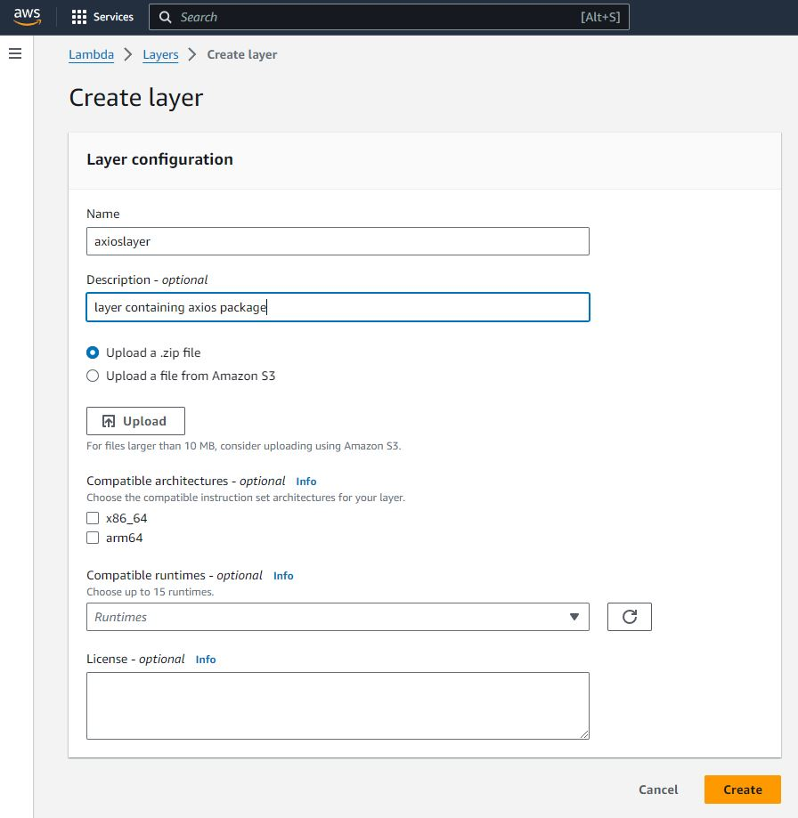
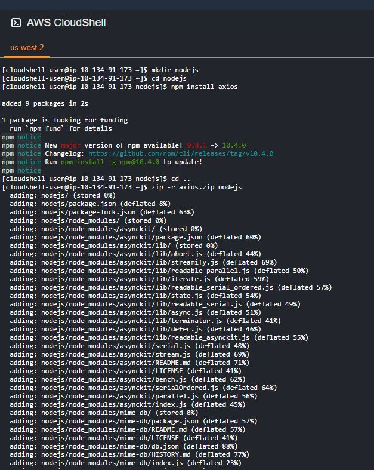
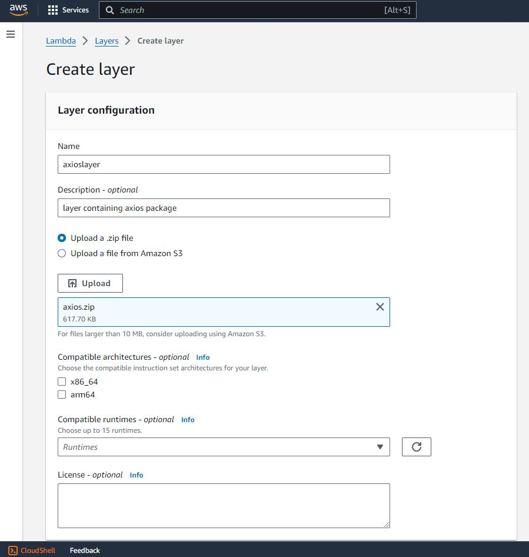
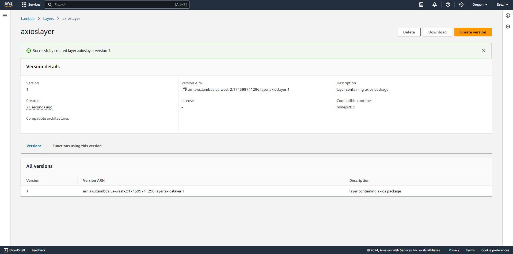
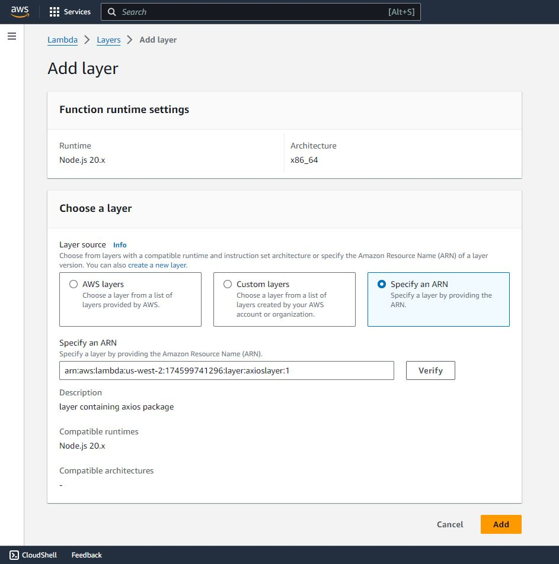
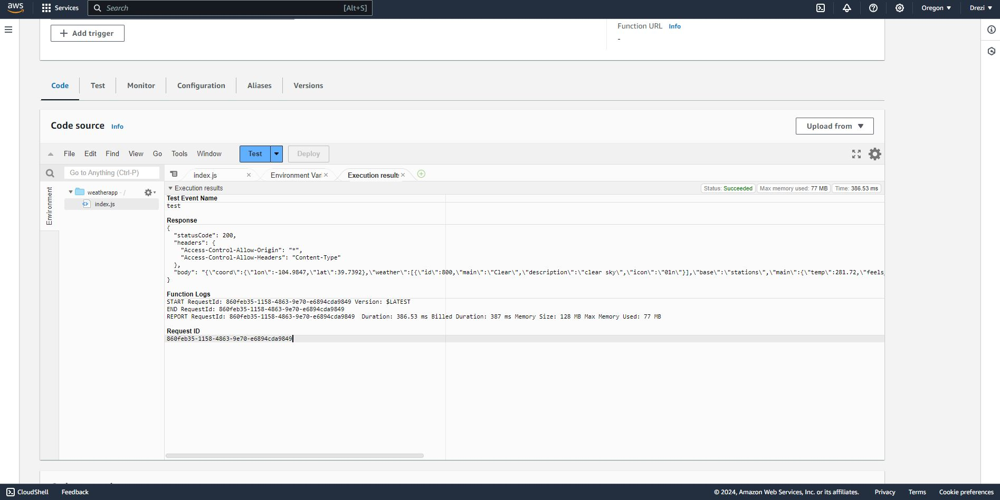

Weather App Project Summary
First we create a lambda function that can use the OpenWeatherMap api
Check out the github repo for the code!
We need an axios layer for our AWS Lambda code to run.

Opening up AWS Cloudshell, we can run the following commands to get an axios package to upload
mkdir nodejs
cd nodejs
npm i axios
rm -rf package-lock.json
cd ..
zip -r axios.zip nodejs

We can then download the file using cloudshell
Here we see the axios.zip file uploaded

We now copy the ARN number and add the layer to our Weather app Lambda function


Test Successful. Code runs.
Using the following query to test
{
"queryStringParameters": {
"city": "Denver"
}
}
